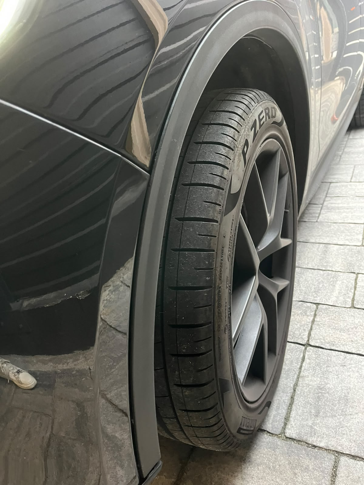
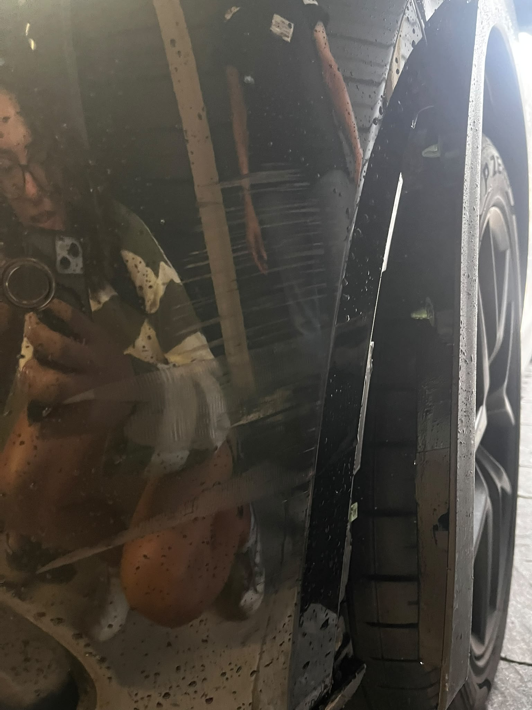
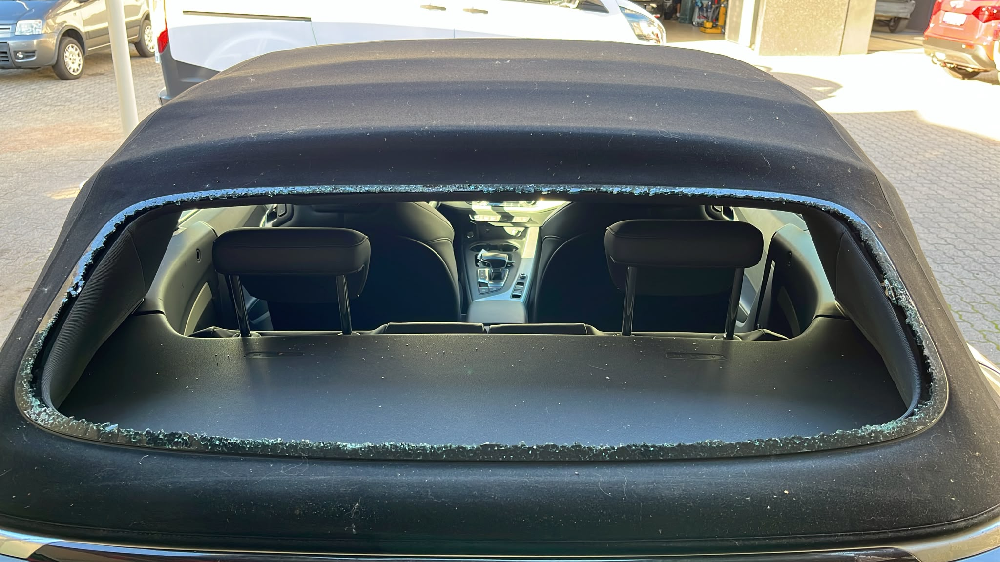

I Nostri Lavori
Prima e Dopo la Riparazione
Trascina il cursore o usa i pulsanti per scoprire la qualità dei nostri interventi di ripristino e verniciatura.

Dopo
PrimaRipristino Fiancata e Verniciatura
Riparazione strutturale a regola d'arte e verniciatura a forno.
 Dopo
Dopo

PrimaSostituzione e Verniciatura Paraurti
Eliminazione completa dei danni da impatto e ripristino sensori.